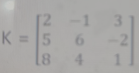
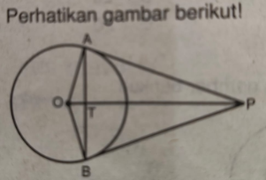

PSAJ Matematika Wajib Kelas 12
📝 30 soal
📋 Kunci Jawaban
Sebuah taman yang berbentuk persegi panjang memiliki keliling 104 m dan luasnya 640 m². Lebar taman tersebut adalah …
A20 m
B24 m
C28 m
D32 m
E20 m
Kunci: E
Luas maksimum sebuah ruangan yang berbentuk persegi panjang dengan keliling 60 m adalah …
A120 m²
B150 m²
C180 m²
D200 m²
E225 m²
Kunci: E
Nilai diskriminan dari persamaan kuadrat 2x² - 3x - 5 = 0 adalah …
A-28
B-15
C21
D37
E49
Kunci: E
Sumbu simetri fungsi f(x) = 2x² - 6x - 5 adalah …
A3
B3/2
C1/2
D-1/2
E-3/2
Kunci: B
Diketahui f(x) = 2x + 7 dan g(x) = x² – 5x – 3. Nilai (f + g) (-2) = …
A2
B3
C8
D11
E14
Kunci: E
Jika persamaan kuadrat x² - (k+1)x + (2k-1) = 0 mempunyai dua akar riil yang berbeda, batas nilai k adalah …
Ak < 1 atau k > 5
Bk < -1 atau k > 5
Ck < -5 atau k > 1
D1 < k < 5
E-5 < k < 1
Kunci: A
Sebuah lingkaran mempunyai panjang jari- jari 15 cm. Panjang busur lingkaran yang menghadap sudut 60° adalah …
A13,7 cm
B14,7 cm
C15,7 cm
D16,7 cm
E17,7 cm
Kunci: C
Dua lingkaran masing – masing berjari – jari 25 cm dan 4 cm bersinggungan diluar. Panjang garis singgung persekutuan luar dua lingkaran adalah …
A25 cm
B24 cm
C20 cm
D18 cm
E17 cm
Kunci: C
Di sebuah toko kain menjual 8 jenis kain berwarna kuning, 15 jenis kain berwarna hijau, dan 17 jenis kain berwarna merah. Rani akan membeli salah satu dari jenis kain tersebut. Banyaknya cara memilih kain tersebut adalah …
A21 cara
B23 cara
C25 cara
D32 cara
E40 cara
Kunci: E
Sebuah gedung olahraga mempunyai 6 buah pintu. Seseorang akan masuk ke Gedung tersebut dan keluar melalui pintu yang berbeda. Banyak cara orang tersebut masuk dan keluar gedung tersebut adalah …
A36 cara
B30 cara
C20 cara
D6 cara
E5 cara
Kunci: B
Dari angka 1, 2, 4, 5, 6, 7 dan 8. Dibuat bilangan yang terdiri atas 4 angka yang berbeda. Banyaknya bilangan ganjil yang dapat dibuat adalah …
A840
B630
C420
D360
E315
Kunci: D
Banyak susunan kata yang dapat dibentuk dari huruf pada kata “LOMBA” tanpa pengulangan huruf, dengan huruf pertama huruf vocal adalah …
A36
B48
C60
D96
E120
Kunci: C
Enam orang pengurus kelas mengadakan rapat. Mereka duduk mengelilingi meja bundar. Banyak cara mereka duduk adalah …
A5040
B720
C120
D24
E6
Kunci: C
Ada 10 wali murid yang belum saling mengenal satu sama lain. Apabila mereka ingin berkenalan dengan cara berjabat tangan, jabat tangan yang akan terjadi sebanyak …
A30
B45
C60
D75
E90
Kunci: E
Dari 12 finalis lomba pidato akan dipilih juara I dan II. Banyak cara memilih pemenang lomba pidato tersebut adalah …
A33
B66
C99
D132
E198
Kunci: D
Perhatikan data berikut.
| Nilai | Frekuensi |
|---|---|
| 54 - 57 | 2 |
| 58 - 61 | 7 |
| 62 - 65 | 12 |
| 66 - 69 | 10 |
| 70 - 73 | 6 |
| 74 - 77 | 3 |
Berdasarkan data diatas, pilihlah 3 pernyataan berikut yang benar adalah.…
APanjang kelas interval adalah 4
BTitik tengah kelas interval ketiga adalah 63,5
CTepi atas kelas interval kedua adalah 61
DBatas bawah kelas interval keempat adalah 65,5
ETepi bawah kelas interval kelima adalah 69,5
Kunci: A, B, E
Diketahui besar sudut AOB = 105°, sudut BOC = 72°, sudut COD = 60°, dan panjang jari - jarinya 42 cm. Pilihlah 3 pernyataan yang benar.
APanjang busur AB = 77 cm
BPanjang busur AD = 96,8 cm
CLuas juring COD = 1.617 cm²
DLuas juring BOC = 1.108,8 cm²
ELuas juring AOD = 1.894,2 cm²
Kunci: A, D, E
Perhatikan himpunan pasangan (x, y) berikut: {(1, 5), (4, 9), (7, 10)}. Pilihlah 3 jawaban berikut yang benar !
ANilai koefisien regresinya adalah 0,83
BNilai konstantanya adalah 5,67
CPersamaan garis regresinya adalah y = 4,67 + 0,83x
DPerkiraan nilai y untuk x = 5 adalah 7,82
EPerkiraan nilai y untuk x = 9 adalah 12,14
Kunci: A, C, E
Di dalam sebuah kardus terdapat 15 bola. Pilihlah 3 pernyataan berikut yang benar adalah ...
ABanyak cara mengambil 1 bola adalah 30
BBanyak cara mengambil 2 bola adalah 105
CBanyak cara mengambil 3 bola adalah 455
DBanyak cara mengambil 4 bola adalah 1.365
EBanyak cara mengambil 5 bola adalah 3.000
Kunci: B, C, D
Pilihlah 3 pernyataan berikut yang benar adalah …
ASusunan huruf "PAKU" adalah 12
BSusunan huruf "KRUSIAL" adalah 5.040
CSusunan huruf "BAHASA" adalah 120
DSusunan huruf "ANDAI" adalah 120
ESusunan huruf "MACAM" adalah 30
Kunci: B, C, E
Didalam sebuah kotak terdapat 7 kelereng kuning dan 5 kelereng hijau. Akan diambil 5 kelereng. Tariklah garis antara pertanyaan dan jawaban tepat:
| Pernyataan | Jawaban |
|---|---|
| Banyak cara mengambil 3 kuning dan 2 hijau | 350 |
| Banyak cara mengambil 2 kuning dan 3 hijau | 210 |
Tariklah garis antara matriks dan jenis matriks yang tepat:
| Pernyataan | Jawaban |
|---|---|
 | matriks tegak |
| matriks persegi |
Diketahui angka – angka 3, 4, 5, 6, 7, dan 9. Tariklah garis antara pertanyaan dan jawaban yang tepat.
| Pernyataan | Jawaban |
|---|---|
| Banyak bilangan ratusan ganjil yang dapat dibuat | 80 |
| Banyak bilangan ratusan terakhir prima genap | 60 |
Ada 4 siswa kelas X, 5 siswa kelas XI dan 3 siswa kelas XII. Mereka duduk mengelilingi meja bundar. Tariklah garis antara pertanyaan dan jawaban yang tepat.
| Pernyataan | Jawaban |
|---|---|
| Siswa kelas XI selalu duduk berdampingan | 7! X 5! |
| Siswa kelas XII selalu duduk berdampingan | 9! X 3! |
Didalam sebuah kotak terdapat 7 kelereng kuning dan 5 kelereng hijau. Tariklah garis antara pertanyaan dan jawaban:
| Pernyataan | Jawaban |
|---|---|
| Ambil 3 kuning dan 2 hijau | 350 |
| Ambil 2 kuning dan 3 hijau | 210 |

Dari matriks diatas, elemen baris ketiga adalah 8, 4, 1Atrue
Bfalse
Kunci: A
Dari matriks diatas, apakah matriks K berordo 3 x 3?
Atrue
Bfalse
Kunci: A
Dari matriks diatas, apakah elemen kolom kedua adalah 3, -2, 1?
Atrue
Bfalse
Kunci: B
Dari matriks diatas, apakah hasil dari a21 + a33 = 1?
Atrue
Bfalse
Kunci: B
Dari matriks diatas, apakah jumlah semua elemen kolom pertama = 15?
Atrue
Bfalse
Kunci: A

Pada gambar tersebut, PA dan PB adalah garis singgung lingkaran dengan pusat O.- Panjang OP = 50 cm dan AP = 40 cm.
- Panjang jari-jari lingkaran = ... cm
30
Kunci: 30
Pada gambar tersebut, PA dan PB adalah garis singgung lingkaran dengan pusat O.
- Panjang OP = 50 cm dan AP = 40 cm.
- Luas segitiga OAP = ... cm2
- Panjang OP = 50 cm dan AP = 40 cm.
- Luas segitiga OAP = ... cm2
600
Kunci: 600
Pada gambar tersebut, PA dan PB adalah garis singgung lingkaran dengan pusat O.
- Panjang OP = 50 cm dan AP = 40 cm
- Luas layang - layang OAPB = ... cm2
- Panjang OP = 50 cm dan AP = 40 cm
- Luas layang - layang OAPB = ... cm2
1.200
Kunci: 1.200
Pada gambar tersebut, PA dan PB adalah garis singgung lingkaran dengan pusat O.
- Panjang OP = 50 cm dan AP = 40 cm.
- Sudut OAP = ... derajat
- Panjang OP = 50 cm dan AP = 40 cm.
- Sudut OAP = ... derajat
90
Kunci: 90
Pada gambar tersebut, PA dan PB adalah garis singgung dengan pusat O.
- Panjang OP = 50 cm dan AP = 40 cm
- Panjang tali busur AB = ... cm
- Panjang OP = 50 cm dan AP = 40 cm
- Panjang tali busur AB = ... cm
48
Kunci: 48